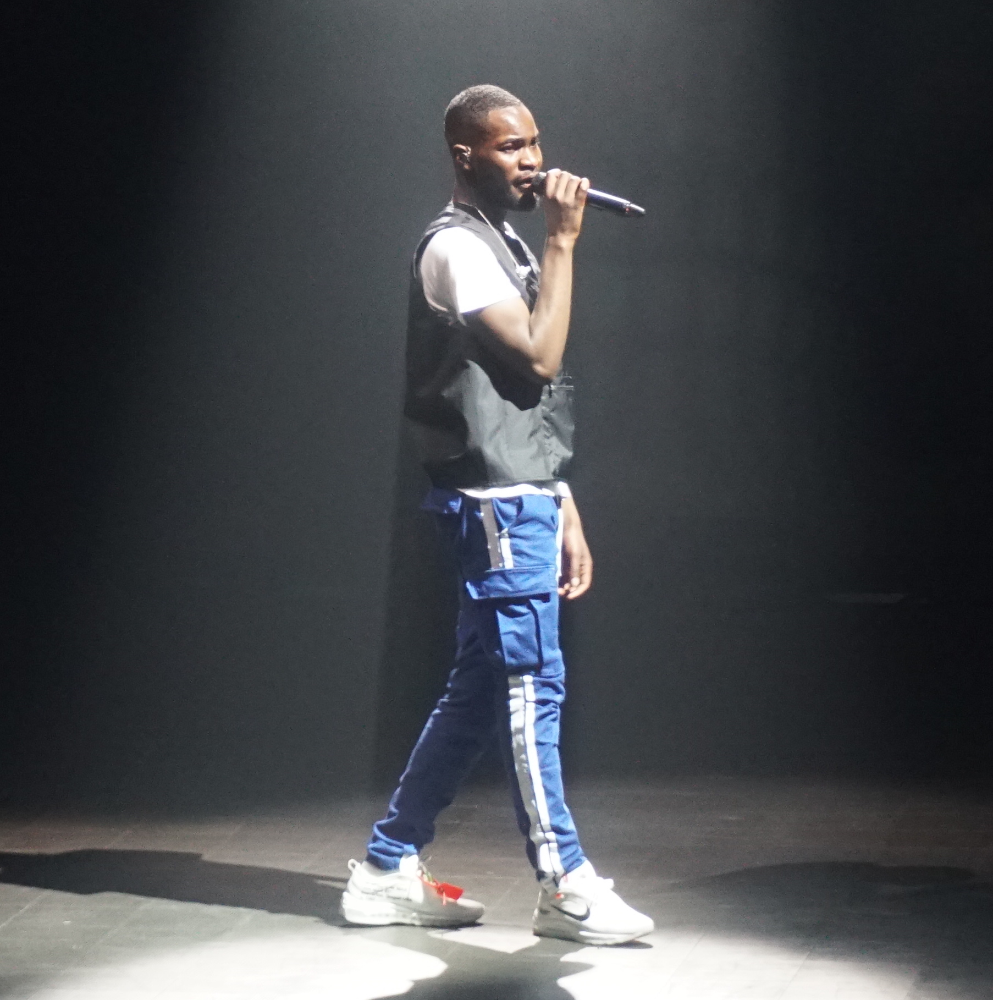
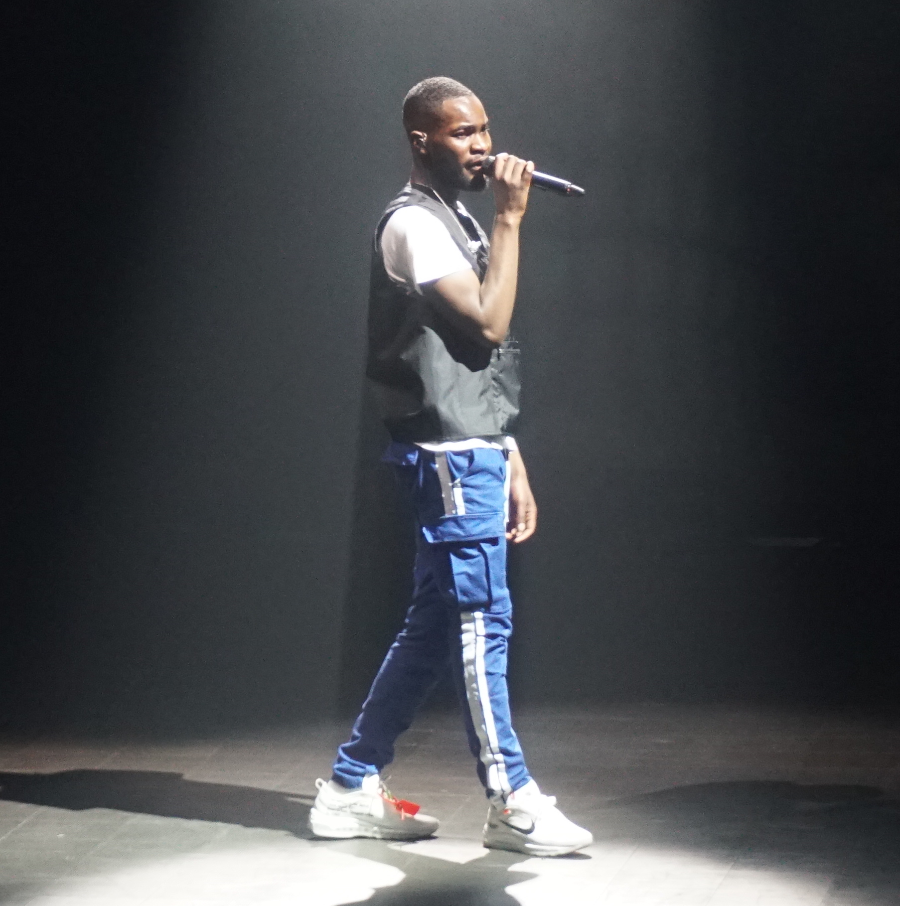

Dave Santan, bekend als Dave, is een Britse rapper en singer-songwriter uit Zuid-Londen. Hij brak door met zijn debuutsingle "Thiago Silva" in 2016 en zijn EP "Six Paths". Zijn album "Psychodrama" uit 2019, met hits als "Location", won de Mercury Prize. Dave staat bekend om diepgaande teksten over onderwerpen als mentale gezondheid en maatschappelijke ongelijkheid. Naast zijn muzikale succes heeft hij geacteerd in "Top Boy". Dave's veelzijdigheid en artistieke integriteit hebben hem een prominente positie in de Britse muziek- en entertainmentindustrie bezorgd. Voor de meest recente informatie, raadpleeg actuele bronnen over Dave Santan.
 
